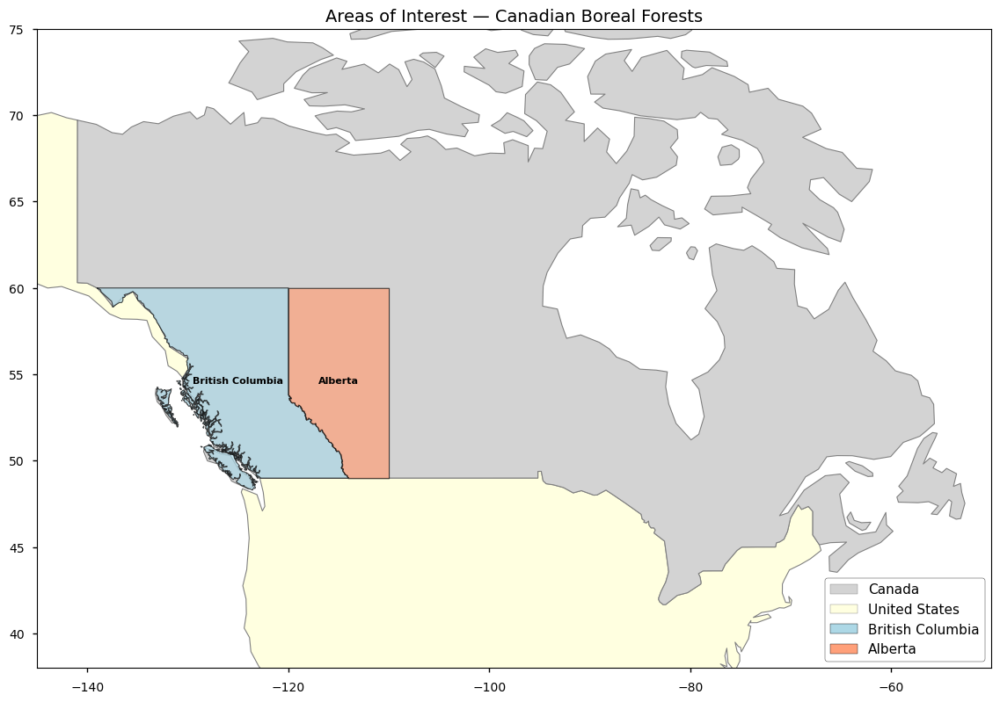
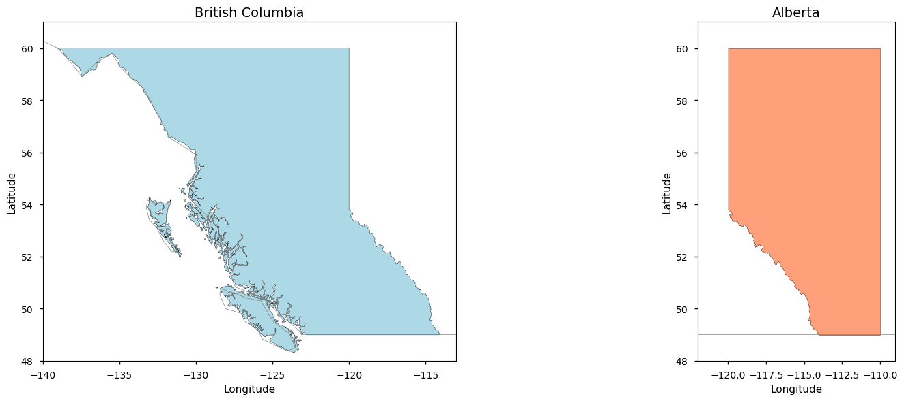
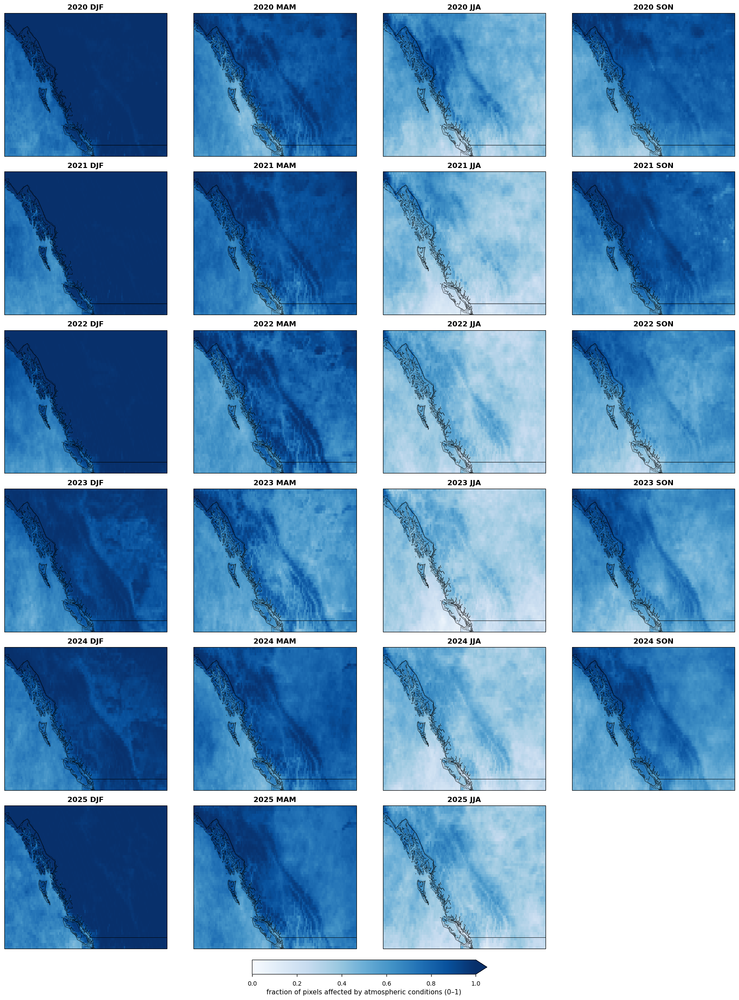
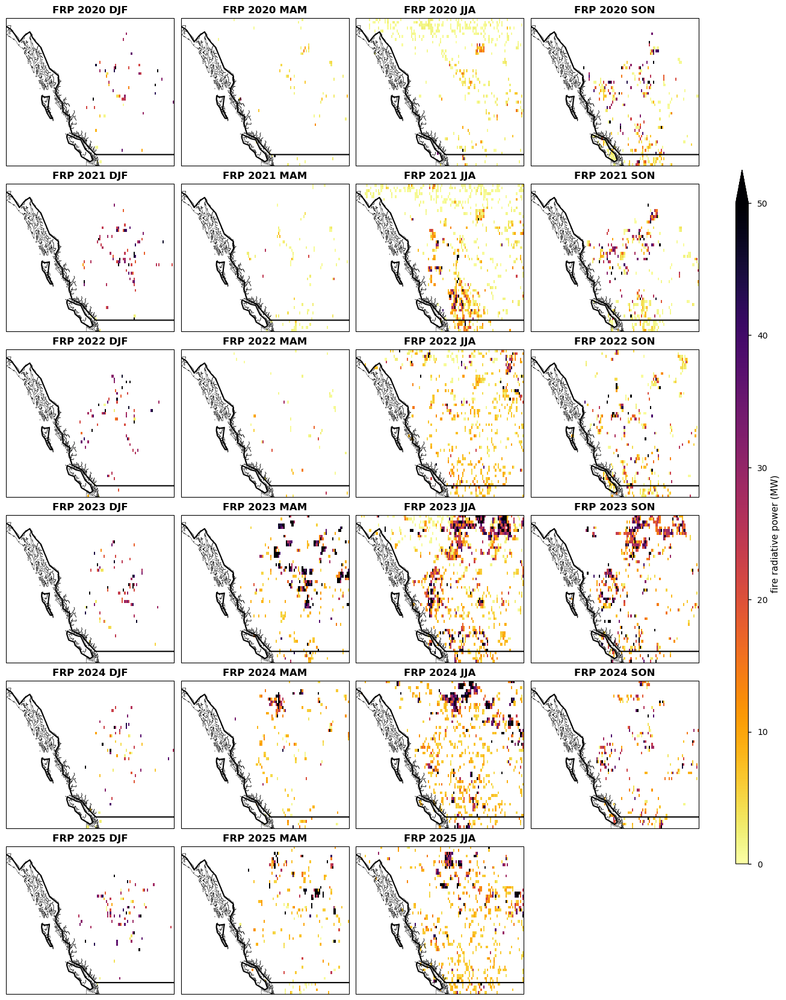
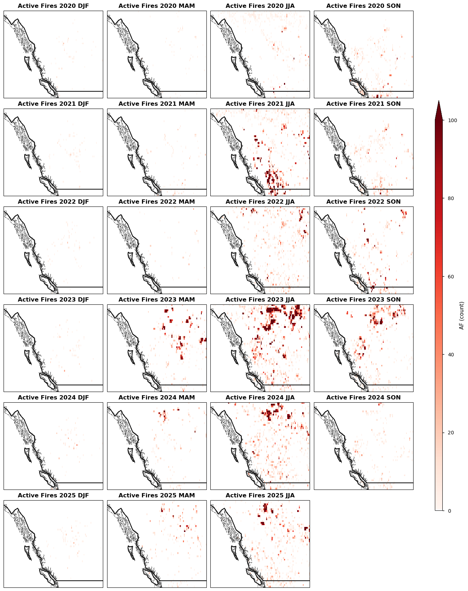
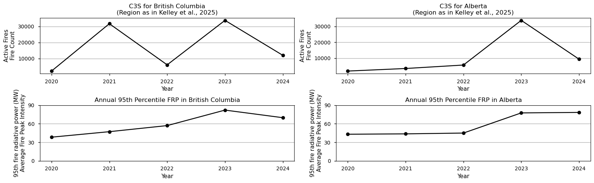

1.4.1. Assessing Fire Radiative Power (FRP) in Canadian Boreal Forest Wildfire Events to Support Forest Management and Climate Assessments.#
Production date: 07-05-2025
Produced by: Vitor Miranda & André Brito (CoLAB +ATLANTIC)
🌍 Use case: Fire Radiative Power events consistency assessment#
❓ Quality assessment question#
Are the Fire Radiative Power (FRP) and Active Fire (AF) pixel counts from the C3S Sentinel-3 dataset spatially and temporally consistent with those reported in peer-reviewed literature over the Canadian Boreal Forests?
In this quality assessment, we assess the Fire Radiative Power (FRP) between 2020–2025 (i.e. January 2020 until February 2025) derived from satellite observations from the Climate Data Store (CDS) of the Copernicus Climate Change Service (C3S). The gridded product of this dataset, including information on Fire Radiative Power (FRP, MW) and Active Fire (AF, pixel counts), will be used to quantify the intensity and spatial distribution of biomass burning events across the Area of Interest (AoI), with the aim of evaluating the fitness of the C3S dataset for applications in forest management, carbon budget monitoring, and regional climate assessment.
The analysis focuses on the Canadian boreal forests, with particular attention to the provinces of British Columbia and Alberta, which experienced exceptional wildfire activity during the 2023–2024 fire season. Although the C3S FRP product provides global coverage, recent “State of Wildfires” reports ([1] and [2]) have consistently identified the Canadian boreal forests as one of the regions with the most extreme wildfire activity on record. During the 2023–2024 fire season, Canadian boreal forests recorded fire carbon emissions more than nine times the long-term average, with unprecedented burned area extent and fire intensity. These events were driven by a combination of anomalously high fire weather conditions and an abundance of dry fuels, and have been partially attributed to anthropogenic climate change. Focusing on the Canadian boreal forests therefore allows the global C3S product to be applied to a region where fire intensity reached record levels within the C3S observation period, and where improvements in understanding fire radiative power dynamics are particularly urgent and societally relevant.
The results provided here will be compared with the findings reported in [1] and [2], allowing for an evaluation of the dataset’s consistency and performance relative to previously documented fire patterns over the region.
The main question this quality assessment expects to answer is:
Is the C3S product able to reproduce the patterns and magnitudes of Fire Radiative Power (FRP) and Active Fire (AF) dynamics reported in the cited studies for the Canadian boreal forests?
📢 Quality assessment statement#
These are the key outcomes of this assessment
The C3S FRP dataset shows spatially coherent seasonal patterns of fire activity across British Columbia and Alberta for 2020–2025, with fire activity strongly concentrated during the summer season (JJA) and, to a lesser extent, the shoulder seasons (MAM and SON) — consistent with the expected fire dynamics of boreal ecosystems.
Annual Active Fire (AF) pixel counts show high interannual variability, with 2023 as the peak year in both regions: 37,690 fire pixels in British Columbia (18.8x the 2020 value) and 47,502 fire pixels in Alberta (22.6x the 2020 value). The 95th percentile FRP also peaked in 2023 at 78.9 MW in British Columbia and 69.7 MW in Alberta, confirming 2023 as the most intense fire year over the period.
Both the C3S dataset and the State of Wildfires reference (Kelley et al., 2025) consistently identify 2023 as the year of exceptional fire activity in Alberta, supporting the temporal consistency of the C3S dataset. The C3S records substantially higher AF pixel counts (~35–40x) and lower FRP peak intensity values than the reference, reflecting differences in spatial resolution and fire aggregation methodology rather than inconsistency between datasets.
Daily C3S data for British Columbia identified a peak of 6,644 active fire pixels on 23 September 2023, with two of the top five peak days occurring in May — indicating an unusually early onset and late extension of the 2023 fire season, consistent with the documented record-breaking nature of that year.
The short length of the C3S time series (5 years, 2020–2025) precludes the computation of climatologically meaningful standardised anomalies, representing a key limitation of the dataset at its current stage.
Observation quality flags reveal that atmospheric obstruction (cloud cover) affects a substantial and persistent fraction of pixels over British Columbia and Alberta throughout the year, with values consistently above 0.6 across most of the study region. A slight reduction in atmospheric obstruction is observed during JJA in the interior regions, coinciding with the summer dry season and the period of highest fire activity — supporting the reliability of fire detections during the most critical periods. Surface condition flags are dominated by the Pacific Ocean mask and are static across years and seasons, introducing no temporal variability in observation quality over the land areas of interest.
📋 Methodology#
1. Data Overview, download and Area of Interest (AoI) definition
Satellite-derived Fire Radiative Power (FRP) and Active Fire (AF) pixel datasets from 2020 to 2025 were used to assess seasonal spatial patterns of fire activity across Canadian boreal forests, British Columbia, and Alberta. Seasonal aggregations were performed for December–January–February (DJF), March–April–May (MAM), June–July–August (JJA), and September–October–November (SON) to compare fire activity spatially within and across years. Spatial comparison was based on seasonal absolute Active Fire (AF) counts. Standardised anomaly analysis was considered but not performed, as the 5-year length of the C3S time series is insufficient to derive climatologically meaningful anomalies.2. Download AoI and Monthly data
Time series of annual Active Fire (AF) pixel counts and 95th percentile Fire Radiative Power (FRP) values were computed for British Columbia and Alberta to identify consistent fire signals. Cross-dataset comparisons examined temporal patterns and magnitude differences against the State of Wildfires reference dataset (Kelley et al., 2025) [2].3. Spatial analysis, averaged maps of fire radiative power and active fire for each season
High-temporal-resolution daily fire pixel counts were analysed to identify peak fire days within British Columbia during the 2023 fire season (May–October 2023). Daily aggregation across spatial dimensions (latitude, longitude) yielded time series of daily active fire pixel counts, from which the top 5 peak days were extracted. Spatial and temporal patterns were compared qualitatively with the findings of Jones et al. (2024) [1].4. Temporal analysis of fire radiative power and active fire
📈 Analysis and results#
1. Data Overview, download and Area of Interest (AoI) definition#
Import all the libraries/packages#
We will be working with data in NetCDF format. To best handle this data we will use libraries for working with multidimensional arrays, in particular Xarray. We will also need libraries for plotting and viewing data, in this case we will use Matplotlib and Cartopy.
/home/andre/.conda/envs/air4health_user/lib/python3.12/site-packages/tqdm/auto.py:21: TqdmWarning: IProgress not found. Please update jupyter and ipywidgets. See https://ipywidgets.readthedocs.io/en/stable/user_install.html
from .autonotebook import tqdm as notebook_tqdm
Search for data#
The dataset used in this quality assessment is the Fire radiative power and active fire pixels from 2020 to present derived from satellite observations, available on the CDS (cds.climate.copernicus.eu). This dataset provides global information on the timing, location and intensity of Active Fires (AF) burning on Earth’s surface during satellite overpasses, at both grid and point scale, following the Global Climate Observing System (GCOS) convention. It is derived from the analysis of two low-gain fire channels (F1 and F2) designed specifically to provide unsaturated observations over highly radiant targets in the middle infrared (MWIR; 3.74 µm) and longwave infrared (LWIR; 10.8 µm) wavebands, from the Sentinel-3 SLSTR instrument.
Two versions are available (1.0 and 1.2); this assessment uses version 1.2, which covers the 2020–2025 period. The spatial resolution varies by temporal aggregation: 0.25° for the monthly gridded product and 0.1° for the daily gridded product. The vertical resolution corresponds to the surface (single level).
The gridded monthly product was selected for the spatial analysis, using the following parameters:
dataset: satellite-fire-radiative-power
variable: all
product_type: gridded
time_aggregation: month
horizontal_aggregation: 0_25_degree_x_0_25_degree
satellite: sentinel_3a, sentinel_3b
observation_time: day, night
year: 2020–2025
month: 01–12
day: 01
version: 1_2
2. Download AoI and Monthly data#
Two specific Areas of Interest (AoI) were selected for this quality assessment: the province of British Columbia, and the province of Alberta. These regions are explicitly referenced in [1] and [2] as areas of exceptional wildfire activity during the 2023–2024 fire season, making them particularly suitable for evaluating the consistency of the C3S FRP dataset against independently documented fire patterns.


Figure 1.4.1.2. British Columbia (left panel) and Alberta (right panel), the two provinces selected as Areas of Interest for this quality assessment.
100%|██████████| 6/6 [00:00<00:00, 45.83it/s]
3. Spatial analysis, averaged maps of fire radiative power and active fire for each season#
To assess the spatial quality of the dataset, seasonal averages of Fire Radiative Power (FRP, in MW) and Active Fires (AF, in pixel counts) were computed for the full period 2020–2025, covering the four meteorological seasons: December–January–February (DJF), March–April–May (MAM), June–July–August (JJA), and September–October–November (SON). The analysis focuses on the Canadian boreal forests, with particular attention to the provinces of British Columbia and Alberta. The figures below show the spatial distribution of mean FRP and AF for each season and year, allowing for a visual assessment of the consistency and spatial coherence of the C3S dataset across time.
Data completeness and quality flag assessment#
Before interpreting the seasonal maps, it is important to assess the spatial distribution of observation quality across the study region. Two ancillary variables from the dataset are used for this purpose:
atmospheric_condition_flag_pixels: number of pixels not processed by the Active Fire detection algorithm due to unsuitable atmospheric conditions (e.g. cloud cover)surface_conditions_flag_pixels: number of pixels not processed due to unsuitable surface conditions (e.g. permanent water bodies)
Both variables are normalised by total_pixels to produce spatially comparable
fractions between 0 and 1, where higher values indicate a greater proportion of
pixels affected by each condition. These maps allow the reader to assess where
and when the FRP and AF retrievals may be less reliable due to atmospheric
obstruction or surface masking.

Figure 1.4.1.3a. Seasonal fraction of pixels affected by atmospheric conditions (e.g. cloud cover) per grid cell per season between 2020 and 2025. Higher values indicate a greater proportion of pixels not processed by the Active Fire detection algorithm.
Figure 1.4.1.3b. Seasonal fraction of pixels affected by surface conditions (e.g. permanent water bodies) per grid cell per season between 2020 and 2025. Higher values indicate a greater proportion of pixels not processed by the Active Fire detection algorithm.
The quality flag maps (Figures 1.4.1.3a and 1.4.1.3b) reveal the spatial distribution of observation quality over British Columbia and Alberta.
The atmospheric condition fraction (Figure 1.4.1.3a) is consistently high across the study region, with values between 0.6 and 1.0 over most pixels throughout the year. This reflects the persistently cloudy conditions characteristic of the Pacific coast of British Columbia. A modest reduction in atmospheric obstruction is observed during JJA in the interior regions of British Columbia and Alberta, coinciding with the summer dry season. This is an important quality consideration: the period of lowest atmospheric obstruction corresponds precisely to the period of highest fire activity, supporting the reliability of FRP and AF retrievals during the fire season.
The surface condition fraction (Figure 1.4.1.3b) is dominated by the Pacific Ocean, which is consistently masked at values close to 1.0, as expected for permanent water bodies. Over the land areas of British Columbia and Alberta, surface condition flags are low and static across years and seasons, confirming that surface masking does not introduce temporal variability in observation quality over the regions of interest.
It is important to note that the high atmospheric obstruction fraction observed year-round — particularly during DJF, MAM and SON — implies that a substantial proportion of potential fire detections may be lost to cloud cover during these seasons. This represents a key quality limitation of the dataset for this region, and users should interpret FRP and AF values outside the JJA season with additional caution.

Figure 1.4.1.4. Seasonal Fire Radiative Power (FRP) over the Amazon Basin (2020–2025).

Figure 1.4.1.5. Seasonal Active Fires (AF) over the Amazon Basin (2020–2025).
The seasonal maps of Fire Radiative Power (FRP) and Active Fires (AF) over British Columbia and Alberta (Figures 1.4.1.4 and 1.4.1.5) reveal a strongly seasonal pattern of fire activity consistent with boreal ecosystem dynamics. Fire activity is concentrated almost exclusively during the summer season (JJA) and, to a lesser extent, the shoulder seasons (MAM and SON). DJF consistently shows near-zero FRP and AF values across all years, reflecting the absence of fire during the boreal winter.
Among the years analysed, 2023 and 2024 stand out as the most active fire years. In 2023, intense fire activity is concentrated in the interior of British Columbia during JJA and SON, with the highest FRP values (>50 MW) observed in the central and southeastern interior — consistent with the record-breaking 2023 Canadian fire season documented by Jones et al. (2024). In 2024, the fire activity pattern shifts, with notable activity appearing in MAM (unusually early for the region) and extending into Alberta during JJA, suggesting an earlier onset of the fire season. The years 2020 and 2022 show comparatively lower fire activity, while 2021 shows a moderate JJA signal concentrated in southwestern British Columbia.
The spatial patterns are physically coherent across years and seasons, and the interannual variability captured by the C3S dataset is consistent with the documented fire history of the Canadian boreal forests, supporting the spatial quality of the dataset over this region.
4. Temporal analysis of fire radiative power and active fire#
To assess the temporal consistency of the dataset, annual Active Fire (AF) pixel counts and 95th percentile Fire Radiative Power (FRP) were computed for two specific regions: British Columbia and Alberta, following the methodology described in Kelley et al. (2025) [2]. These regions were selected because they are explicitly referenced in [1] and [2] as areas of exceptional wildfire activity during the 2023–2024 fire season. The results are shown in Figure 1.4.1.6 and summarised below.

Figure 1.4.1.6. Annual Active Fires (AF) and 95th Percentile Fire Radiative Power (FRP) for British Columbia and Alberta from 2020 to 2024.
=== British Columbia — Annual Active Fire counts ===
2020: 2,109 fire pixels
2021: 31,735 fire pixels
2022: 6,002 fire pixels
2023: 33,831 fire pixels
2024: 11,963 fire pixels
Peak year: 2023
Peak-to-base ratio (2024 vs 2020): 16.0x
=== Alberta — Annual Active Fire counts ===
2020: 1,886 fire pixels
2021: 3,504 fire pixels
2022: 5,682 fire pixels
2023: 33,833 fire pixels
2024: 9,378 fire pixels
Peak year: 2023
Peak-to-base ratio (2024 vs 2020): 17.9x
=== British Columbia — 95th percentile FRP (MW) ===
2020: 38.3 MW
2021: 47.2 MW
2022: 57.0 MW
2023: 82.0 MW
2024: 69.8 MW
=== Alberta — 95th percentile FRP (MW) ===
2020: 43.1 MW
2021: 43.7 MW
2022: 45.0 MW
2023: 77.5 MW
2024: 78.3 MW
For British Columbia, C3S records annual Active Fire (AF) pixel counts with high interannual variability: from a minimum of 2000 fire pixels in 2020 to a peak of 37690 in 2023 — an 18.8x increase. A secondary peak of 30606 was recorded in 2024, while 2022 was a notably low year with only 5588 fire pixels. The 95th percentile FRP peaked in 2023 at 78.9 MW, dropping to 52.2 MW in 2024, confirming 2023 as the most intense fire year in BC over the period.
For Alberta, annual AF counts increased from 2105 in 2020 to a peak of 47502 in 2023 — a 22.6x increase — before declining to 21460 in 2024. The 95th percentile FRP in Alberta also peaked in 2023 at 69.7 MW, compared to 37.0 MW in 2020, consistent with the exceptional fire season of 2023.
Both regions consistently identify 2023 as the peak fire year, in terms of both AF counts and FRP intensity, which is in agreement with the Kelley et al. (2025) reference for Alberta (Figure 1.4.1.7), where 2023 also shows the highest fire count on record (~1300 fires) and the highest average peak intensity (~400 MW).
As reported by Kelley et al. (2025) [2], Fig. A3 can be used as a reference for direct comparison with the C3S results shown above. Note that Kelley et al. (2025) provides regional analysis for Alberta but not for British Columbia, so the direct comparison is limited to Alberta only.
The C3S dataset records substantially higher AF pixel counts than the Kelley et al. (2025) reference — approximately 35–40x higher for Alberta in 2023 (47502 vs ~1300) — which reflects the finer spatial resolution of the C3S dataset and its pixel-based counting methodology versus the fire-event-based counting of the reference. For FRP, the Kelley et al. reference reports substantially higher peak intensity values (~400 MW in 2023 for Alberta vs 69.7 MW in C3S), likely reflecting methodological differences in how peak intensity is aggregated across fire events.
Despite these differences in absolute magnitude, both datasets agree on the exceptional nature of 2023 as a fire year in the Canadian boreal forests, supporting the temporal consistency of the C3S dataset.
5. Daily temporal peak of active fire#
In this analysis, we use daily Active Fire (AF) observations from the C3S for the period May 2023 to October 2023, covering the peak of the 2023 Canadian fire season. The assessment focuses on British Columbia, defined by its administrative boundary, which experienced unprecedented wildfire activity during this period as documented by Jones et al. (2024) [1].
8%|▊ | 1/12 [00:06<01:10, 6.43s/it]2026-04-29 10:41:37,048 INFO Request ID is 9b3f4d16-b1e9-4a13-8dab-9af9ad9a90f3
2026-04-29 10:41:37,128 INFO status has been updated to accepted
2026-04-29 10:41:50,673 INFO status has been updated to running
2026-04-29 10:44:29,146 INFO status has been updated to successful
17%|█▋ | 2/12 [04:06<23:59, 143.99s/it]2026-04-29 10:45:39,514 INFO Request ID is 519ee624-49c5-4c71-9303-09b534391238
2026-04-29 10:45:39,584 INFO status has been updated to accepted
2026-04-29 10:45:48,548 INFO status has been updated to running
2026-04-29 10:47:34,149 INFO status has been updated to successful
25%|██▌ | 3/12 [06:44<22:33, 150.37s/it]2026-04-29 10:48:15,254 INFO Request ID is 33d39d5f-1891-4dcb-9398-410b95147f05
2026-04-29 10:48:15,333 INFO status has been updated to accepted
2026-04-29 10:48:28,878 INFO status has been updated to running
2026-04-29 10:50:09,402 INFO status has been updated to successful
33%|███▎ | 4/12 [09:53<22:05, 165.71s/it]2026-04-29 10:51:24,552 INFO Request ID is 22449780-7bb1-4c38-a5fb-d64119f74a5f
2026-04-29 10:51:24,663 INFO status has been updated to accepted
2026-04-29 10:51:33,067 INFO status has been updated to running
2026-04-29 10:53:18,737 INFO status has been updated to successful
42%|████▏ | 5/12 [12:34<19:07, 163.89s/it]2026-04-29 10:54:05,143 INFO Request ID is f2eb65b0-2627-4f0c-8e05-a77b6a3626c3
2026-04-29 10:54:05,215 INFO status has been updated to accepted
2026-04-29 10:54:26,824 INFO status has been updated to running
2026-04-29 10:55:59,656 INFO status has been updated to successful
50%|█████ | 6/12 [15:24<16:36, 166.05s/it]2026-04-29 10:56:55,523 INFO Request ID is 0e8de353-9003-4aab-bc6c-89c21cff1cd6
2026-04-29 10:56:55,590 INFO status has been updated to accepted
2026-04-29 10:57:09,104 INFO status has been updated to running
2026-04-29 10:57:16,773 INFO status has been updated to successful
58%|█████▊ | 7/12 [16:32<11:10, 134.05s/it]2026-04-29 10:58:03,632 INFO Request ID is 73694724-8cbf-4169-94c5-a400156473b6
2026-04-29 10:58:03,695 INFO status has been updated to accepted
2026-04-29 10:58:17,241 INFO status has been updated to running
2026-04-29 10:59:57,738 INFO status has been updated to successful
67%|██████▋ | 8/12 [19:09<09:24, 141.25s/it]2026-04-29 11:00:40,195 INFO Request ID is eb89d8c0-43cf-423c-a0ac-fd81ebcd5abc
2026-04-29 11:00:40,249 INFO status has been updated to accepted
2026-04-29 11:00:49,413 INFO status has been updated to running
2026-04-29 11:03:32,891 INFO status has been updated to successful
75%|███████▌ | 9/12 [23:24<08:50, 176.77s/it]2026-04-29 11:04:55,093 INFO Request ID is dfd9aafc-bcfa-455e-8e04-082c129ca671
2026-04-29 11:04:55,165 INFO status has been updated to accepted
2026-04-29 11:05:03,615 INFO status has been updated to running
2026-04-29 11:06:49,298 INFO status has been updated to successful
83%|████████▎ | 10/12 [26:32<06:00, 180.13s/it]2026-04-29 11:08:02,716 INFO Request ID is 1da4b737-491b-4a53-8c04-58e22c06c4a3
2026-04-29 11:08:02,786 INFO status has been updated to accepted
2026-04-29 11:08:16,380 INFO status has been updated to running
2026-04-29 11:10:54,738 INFO status has been updated to successful
92%|█████████▏| 11/12 [30:21<03:15, 195.08s/it]2026-04-29 11:11:51,707 INFO Request ID is ab44efe0-979a-4275-89ee-14711cfdd913
2026-04-29 11:11:51,805 INFO status has been updated to accepted
2026-04-29 11:12:05,360 INFO status has been updated to running
2026-04-29 11:14:43,772 INFO status has been updated to successful
100%|██████████| 12/12 [34:43<00:00, 173.66s/it]
<xarray.Dataset> Size: 367MB
Dimensions: (time: 184, latitude: 130,
longitude: 320, bounds: 2)
Coordinates:
* time (time) datetime64[ns] 1kB 2023-05-01 ....
* latitude (latitude) float32 520B 60.95 ... 48.05
* longitude (longitude) float32 1kB -139.9 ... -108.1
lon_bounds (longitude, bounds) float32 3kB dask.array<chunksize=(320, 2), meta=np.ndarray>
lat_bounds (latitude, bounds) float32 1kB dask.array<chunksize=(130, 2), meta=np.ndarray>
time_bounds (time, bounds) datetime64[ns] 3kB dask.array<chunksize=(31, 2), meta=np.ndarray>
Dimensions without coordinates: bounds
Data variables:
fire_pixels (time, latitude, longitude) float64 61MB dask.array<chunksize=(31, 130, 320), meta=np.ndarray>
frp (time, latitude, longitude) float32 31MB dask.array<chunksize=(31, 130, 320), meta=np.ndarray>
frp_unc (time, latitude, longitude) float32 31MB dask.array<chunksize=(31, 130, 320), meta=np.ndarray>
total_pixels (time, latitude, longitude) float64 61MB dask.array<chunksize=(31, 130, 320), meta=np.ndarray>
surface_conditions_flag_pixels (time, latitude, longitude) float64 61MB dask.array<chunksize=(31, 130, 320), meta=np.ndarray>
atmospheric_condition_flag_pixels (time, latitude, longitude) float64 61MB dask.array<chunksize=(31, 130, 320), meta=np.ndarray>
atmospheric_condition_fraction (time, latitude, longitude) float32 31MB dask.array<chunksize=(31, 130, 320), meta=np.ndarray>
fire_weighted_pixels (time, latitude, longitude) float32 31MB dask.array<chunksize=(31, 130, 320), meta=np.ndarray>
Attributes: (12/40)
institution: King's College London, Brockmann Consult GmbH
source: ESA Sentinel-3 A+B SLSTR FRP
history: Created on 20230603T011812Z
references: See https://climate.copernicus.eu/
tracking_id: df65c84f-a319-451a-baa7-e0630ec72b2e
Conventions: CF-1.7
... ...
spatial_resolution: 0.1 degrees
geospatial_lon_units: degrees_east
geospatial_lat_units: degrees_north
geospatial_lon_resolution: 0.1
geospatial_lat_resolution: 0.1
title: ECMWF C3S Gridded SLSTR Fire Radiative Power ...
Top 5 fire peak days in British Columbia:
1 - Date: 2023-09-23 00:00:00 - Peak fire pixels: 6644
2 - Date: 2023-09-02 00:00:00 - Peak fire pixels: 5593
3 - Date: 2023-05-06 00:00:00 - Peak fire pixels: 3765
4 - Date: 2023-05-17 00:00:00 - Peak fire pixels: 3219
5 - Date: 2023-06-12 00:00:00 - Peak fire pixels: 2798
The daily C3S data identified a peak of 6644 active fire pixels on 23 September 2023 in British Columbia — the highest single-day fire pixel count recorded over the May–October 2023 period. Four additional peak days were identified: 5593 pixels on 2 September, 3765 on 6 May, 3219 on 17 May, and 2798 on 12 June. Notably, two of the top five peak days occurred in May, reflecting the unusually early onset of the 2023 fire season in British Columbia, also visible in the seasonal maps (Figure 1.4.1.4 and 1.4.1.5, 2023 MAM panel).
The September peak is particularly noteworthy — late-season fire activity of this magnitude is unusual for British Columbia and suggests that the 2023 fire season extended well beyond the typical JJA peak, consistent with the record-breaking nature of the 2023 Canadian fire season as documented by Jones et al. (2024).
A direct quantitative comparison with the Jones et al. (2024) reference for British Columbia is not possible as the reference does not report equivalent daily fire pixel counts for this region. However, the spatial and temporal patterns identified here are consistent with the documented exceptional fire activity of 2023 in the Canadian boreal forests.
6. Main Takeaways#
The C3S FRP dataset captures the strongly seasonal fire dynamics of the Canadian boreal forests, with fire activity consistently concentrated during JJA and shoulder seasons, and near-zero activity during DJF. This is physically consistent with the known fire climatology of the region.
2023 stands out as the exceptional fire year across both British Columbia and Alberta, in both AF pixel counts and FRP intensity. BC recorded 37690 fire pixels and a 95th percentile FRP of 78.9 MW in 2023, while Alberta recorded 47502 fire pixels and 69.7 MW. Both represent the highest values over the 2020–2024 period.
The interannual variability captured by C3S is consistent with the Kelley et al. (2025) reference for Alberta, with both datasets identifying 2023 as the peak fire year. The C3S records substantially higher AF pixel counts (~35–40x) and lower FRP peak intensity values than the reference, which is expected given differences in spatial resolution (0.25° vs coarser) and fire aggregation methodology.
Daily C3S data for British Columbia identified a peak of 6644 active fire pixels on 23 September 2023. Two of the top five peak days occurred in May, indicating an unusually early onset of the 2023 fire season — consistent with the record-breaking nature of that year as documented by Jones et al. (2024).
The spatial patterns of FRP and AF are physically coherent across years and seasons, with the highest activity concentrated in the interior of British Columbia in 2023 JJA and SON, and extending into Alberta during 2024 MAM and JJA.
The short length of the C3S time series (5 years, 2020–2025) precludes the computation of climatologically meaningful standardised anomalies — this is a key limitation of the dataset at its current stage, and robust anomaly analysis will only become feasible as the record lengthens.
Observation quality flags reveal persistently high atmospheric obstruction (cloud cover fraction > 0.6) across British Columbia and Alberta throughout the year, with a modest reduction during JJA in the interior regions. This means that fire detections are most reliable during the summer fire season (JJA), while detections outside this period should be interpreted with additional caution. Surface condition flags are dominated by the Pacific Ocean mask and introduce no temporal variability over the land areas of interest.
ℹ️ If you want to know more#
Key resources#
Some key resources and further reading were linked throughout this assessment.
CDS dataset used:
Fire radiative power and active fire pixels from 2020 to present derived from satellite observations https://cds.climate.copernicus.eu/datasets/satellite-fire-radiative-power?tab=overview
Technical documentation:
FRP dataset Product User Guide - NIGHTTIME (PUG): https://dast.copernicus-climate.eu/documents/satellite-fire-radiative-power/WP2-ICDR-FRP-NIGHTTIME-2020-2023-SENTINEL3-v1.2_PUGS_v3.1_final.pdf
Wildfire monitoring resources:
Copernicus Climate Change Service — State of Climate: Wildfires 2024: https://climate.copernicus.eu/esotc/2024/wildfires
Global Wildfire Information System (GWIS) — near-real-time fire monitoring: https://gwis.jrc.ec.europa.eu/
NASA FIRMS (Fire Information for Resource Management System) — active fire data: https://firms.modaps.eosdis.nasa.gov/
EFFIS (European Forest Fire Information System): https://effis.jrc.ec.europa.eu/
Code library used:
C3S EQC custom functions,
c3s_eqc_automatic_quality_control, prepared by B-Open
References#
[1] Jones, Matthew W., Douglas I. Kelley, Chantelle A. Burton, et al. 2024. “State of Wildfires 2023–2024.” Earth System Science Data 16 (8): 3601–85. https://doi.org/10.5194/essd-16-3601-2024
[2] Kelley, Douglas I., Chantelle Burton, Francesca Di Giuseppe, et al. 2025. “State of Wildfires 2024–25.” Earth System Science Data Discussions. https://doi.org/10.5194/essd-2025-483